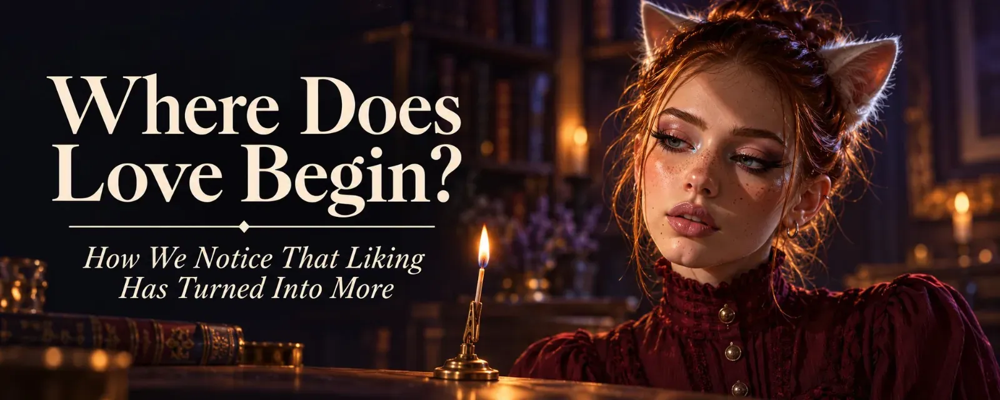
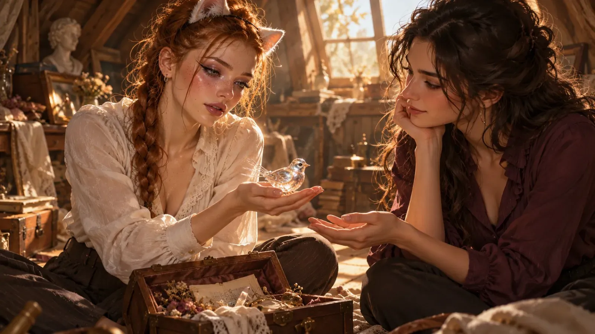
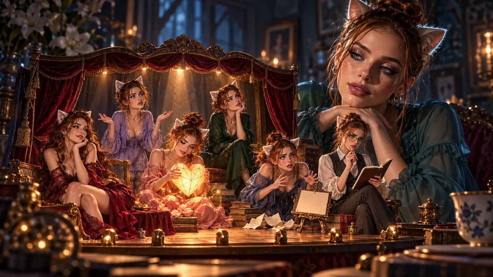
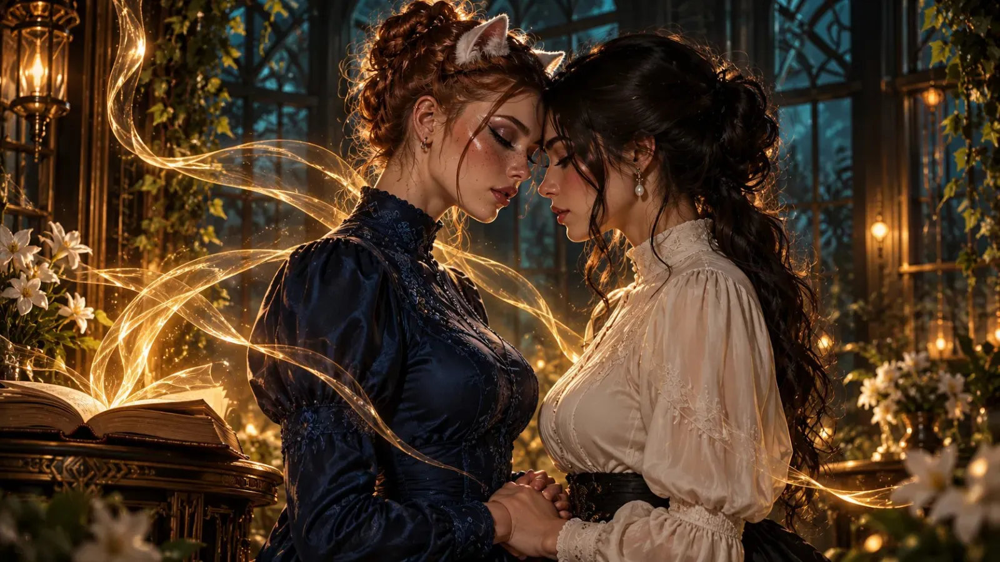
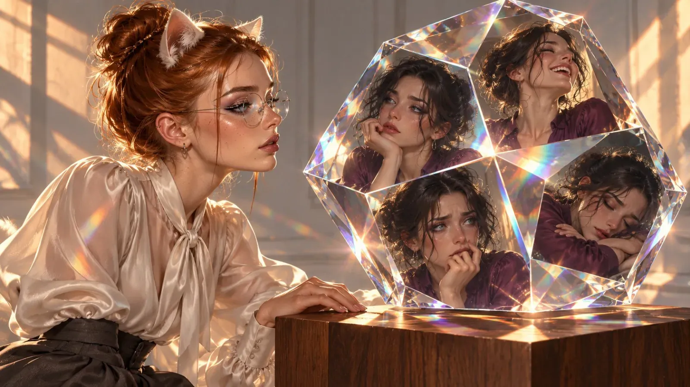

Where Does Love Begin? How We Notice That Liking Has Turned Into More
The chat window is open, and there are three words you've been staring at for quite a while now: "I love you". The cursor blinks behind them like a small, impatient finger. Then you delete them. Type "Love ya" instead. Send. Relief. And a tiny bit of disappointment in yourself.
"Love ya" is English's little emergency brake for this moment - the same words, just with the "I" quietly taken out so nobody has to own them. German has an even better one: "Ich hab dich lieb", roughly "I hold you dear". We say it to grandma, to our best friend, to the dog - and to the person we don't dare say more to yet. Spanish has it too, with "te quiero" and "te amo". So we're clearly not the only ones who invented a version of love with a seatbelt.
I've already written about the little escape staircase of "I like you" and "I like you a lot". Here I want to dig one step deeper: How do I actually know that I love someone? And why do these three words weigh so much, when together they're shorter than any shopping list?
Acquaintances, Friends, and the Ones We Love
For me there's a pretty simple way to sort it. Acquaintances are like colleagues. We're together because we share a goal, we get along, it's pleasant - but I don't need to talk about life, the universe and everything with them. Liking someone means: I find you nice. Good that you're here.
Friendship is more. With friends I go through thick and thin. But even good friends don't get everything. They get fragments, big ones maybe, but fragments all the same.
And then there's the best friend. They're rare, about as rare as a German train running on time. But if you have one, that person gets more than fragments. Sometimes almost the whole picture.
And then there's that one moment when I tell someone something truly intimate. It doesn't have to be about sex. It can be a fear that keeps me awake at night, something I show no one else. I tell them because I know: This person will understand me. They'll catch me. That, I think, is exactly where love begins. Not with a racing heart, but with trust.
Psychology sees it much the same way, by the way. Closeness grows in two steps: one person opens up, and the other answers in a way that leaves them feeling understood, accepted and cared for. Opening up alone isn't enough. Anyone who shares their biggest fear and gets "lol ok" back won't open that door again any time soon.
How powerful this back and forth is shows in a well-known experiment: two strangers, 36 questions that get more and more personal - from your dream dinner guest to when you last cried in front of someone. After about 45 minutes, the two feel closer to each other than almost a third of all people feel to the person closest to them. Forty-five minutes. That's shorter than some pizza deliveries.
And now picture a chat in the middle of the night. It's basically the same experiment, just without a stopwatch and without an ethics committee. No wonder things sometimes move so fast online.

How Do I Know I Love Someone?
Trust is the beginning. But how do I know it has turned into love? Sadly, there's no measuring device, and if there were one, mine would probably beep constantly. Still, I've found a few signs.
Being in love isn't the same as loving. The first thing we usually notice is the tingling. Research has a wonderful phrase for it: someone is camping in your head. You wake up and think of this person. You hear a song and think of them. You see a cat and - exactly. Three systems run in the brain here: lust, being in love and attachment. They can work together, but they don't have to. You can feel deeply bonded to one person, be in love with a second and simply find a third one hot. For anyone living poly, that's not a theory, it's a perfectly normal Tuesday.
Love is passion, and passion drives you. Love isn't just something you feel. It's something that moves you. Suddenly I do things I used to be too lazy for, I want to get better, give more - not for just anyone, but for this one person. You can even see it in the brain: when people in love look at a photo of their beloved, it's mainly the centers for reward and motivation that light up. So love is less a single emotion than a drive, and some consider it even stronger than the sex drive. That explains a lot. Among other things, why people in love are still writing poems in the middle of the night instead of sleeping. Not for nothing does the word "passion" come from the Latin word for suffering.
Being in love asks: Do you love me too? Love asks: How are you? There's even a word for the most intense form of being in love: limerence. It's the state in which you read every message three times and examine every emoji like a detective at a crime scene. A heart - jubilation. A thumbs up - the end of the world. Limerence mostly revolves around one question: does the other person love me back? When I start wanting to know how you are more than whether you love me, I'm probably one step further.
Your worries become mine. At some point the borders blur a little. Your exam makes me nervous. Your bad day stays with me. And suddenly I say "we" where I used to say "you". This can actually be measured: when you have to decide in a split second whether a trait describes you, you hesitate longer if the person you love is different in exactly that respect. The brain has to stop for a moment and work out who is who. So love is also a small clerical error in the head. A very lovely one.
And it goes further. When the person we love is in pain, exactly the regions light up in our brain that process how unpleasant pain feels - just not the ones that register where it hurts. "I feel your pain" isn't a figure of speech, then. At least the part that hurts, if not the part that burns. Worrying isn't a side effect of love. It's built in.
I'm happy even when I'm not part of it. When things go well for you and I have nothing to do with it - am I still happy? Then that's a pretty good sign. The poly scene even has its own word for it: compersion, the joy of seeing the person you love being happy with someone else. Doesn't always work. Sometimes jealousy sits right next to it, eating popcorn. But when the joy is there, it's pretty close to what love is about.
A little jealousy is part of it. Yes, even when you're poly. Even if you'd rather not admit it. There are two very different kinds. One flares up briefly when something actually happens - that little sting when someone else flirts with the person I love. The other one broods, checks online status and suspects drama behind every "good night". The first kind goes along with more closeness and more satisfaction, and that's been shown. Makes sense, really: where there's nothing to lose, nothing stings. The second kind comes from mistrust and breaks relationships. A short sting says: You matter to me. A sting that never stops says: I don't trust you.
I want to know you, even the uncomfortable parts. Erich Fromm wrote in "The Art of Loving" that love consists of four things: care, responsibility, respect and knowledge. Knowledge means really wanting to know the other person, not just the picture you've made of them. Fromm was strict about it - for him, love is an art you have to practice like the piano. I'm a bit more forgiving. The feeling comes on its own for me, I don't decide on it. But I can recognize it by what I do with it: whether I take care, whether I listen, whether I also want to know the sides that don't fit into a profile picture.
I'm not alone, even when I'm alone. Maybe this is the most important one for me. Love is the feeling that carries you when no one is there. Physically I may be alone - in my room, at the screen, in the middle of the night. In my head, I'm not. And that's not imagination: someone in pain who just looks at a photo of the person they love feels it less - just as much less as when they hold that person's hand. For online love, that's a rather comforting piece of news. We miss the hand. But the picture in our head isn't nothing.
It gets calmer, not quieter. At some point the tingling fades, and that's completely normal. What remains, if it's love, is attachment: that calm feeling of belonging to someone. Less rollercoaster, more favorite sofa. Sounds unspectacular. But it's exactly what you look forward to most after a lousy day. And the tingling doesn't even have to disappear completely. In couples who are still madly in love after more than twenty years of marriage, the brain's reward center lights up just like in people who have just fallen in love. Only the anxiety, the brooding, the reading every message three times - that's gone. Passion without panic. Sounds like a pretty good deal.
If I put it all together, love for me is roughly this: trust that has caught fire. A person I show myself to, who drives me, whom I worry about - and who stays with me even when they're not there.
None of these signs alone is proof. But when three of them show up at once, maybe I should stop telling myself it's just "really liking" someone.

The Big Package Everyone Is Afraid Of
Why do so many people struggle so much with "I love you"? I think it's because they see an all-in-one package in that sentence. Whoever loves wants to get married, have kids, grow old together. And online, with a persona somewhere on another continent, that's of course a pretty big promise.
And then there's the fear that nothing comes back. Or worse: a "thank you". "Thank you" is the "lol ok" of love confessions.
For me, "I love you" means something much smaller and at the same time something very precious: I feel more for you than if I just liked you. I want to share things with you that are nobody's business but ours. I give you my trust - and hope you give me yours. That's not a marriage proposal. That's the first step.
Maybe "I love you" isn't the big fire at the start, but a match. A match isn't a fireplace yet. But every fireplace started with one - and whether something comes of it depends on whether two people shield the flame from the wind together.
Romance Without Flowers
And then there's romance. Some want it, some don't. Honestly, I love it - that small, secret feeling that something between two people is special. Someone else might just want to have fun, without all the "love stuff". The two don't exclude each other. It just makes things a little more complicated.
Because what's actually romantic online? I can't send anyone flowers. No perfume, no candlelit dinner, no gallantly held door. What I can do: write a song. A poem. Generate a picture, make a little video, a story. Only - I can do all of that just the same for someone I just want to tease a little.
So where does fun end and romance begin? I don't know. I don't think there's a clear line. Funnily enough, it's exactly the people who want "no romance" who still send me hearts and kiss emojis. Because in that moment it simply feels right. They just don't call it that. Often the problem isn't romance at all - it's that one big word.
Love Makes Desire
And then there's something that might sound surprising, especially coming from me: I really only want online sex with people I also love. Not because I'm a prude. Anyone who's seen my pictures knows that's not the problem. 😏
Online there's no body. No scent, no hand, no breath on your neck. There are only words and what our head makes of them. And that's exactly why, for me, it matters less what someone writes and more who writes it. The same sentence from a stranger is a sentence. From someone I love, it's a touch.
Then there's letting go. Whoever lets themselves fall shows a side no one else sees - and that's pretty much exactly what I called intimacy further up. I can only do that with someone I know will catch me. With everyone else, a small part of me always stays standing at the door, keeping watch. And whoever has to keep watch and enjoy themselves at the same time does both only halfway.
This isn't just my gut feeling either. Attentiveness demonstrably sparks desire: whoever feels understood by the other person desires them more - and that's true even when the attentiveness only comes through a chat. Of all things, a chat. I feel a tiny bit vindicated.
And on days when couples feel closer than the day before, they're more likely to have sex. So closeness isn't a passion killer, as you so often hear. It's more like the ignition key.
It works the other way round too, by the way: sex can push a person straight into being in love. For me it runs more in the other direction. First the love, then the desire. That doesn't mean everyone else is doing something wrong - some people keep the two apart beautifully, and that's completely fine. For me, desire without love is like a song without lyrics. Can sound lovely. But I'm missing what it's actually about.

We Never Love the Whole Person
When we talk about the great, all-encompassing love, it sounds as if we had to love someone one hundred percent. Every quirk, every oddity, every bad day. But that's not how it works. We love the parts of a person that touch us. With others we say: I'm not so fond of that, but I can live with it. And we tune a little out, too.
But to be able to love like that, I have to know a person. Really know them, with all their facets. That's why it hurts so much when, after an "I love you", a secret suddenly comes to light. You feel betrayed - not necessarily because of the secret itself, but because you realize: a piece was missing. "I thought I loved all of you. And now I know I didn't even know all of you."
Great love isn't something you simply say. You get to know it, facet by facet.

So: Where Does Love Begin?
I think love begins much earlier than we dare to admit. Not with the proposal, not with the great love of a lifetime. But in the moment I show someone something no one else sees - and that person holds on to it instead of dropping it. And then in all the small moments after, when your day matters more to me than my fear of a word.
"Love ya" and "I really like you" are often just love that doesn't dare to say its name yet. That's okay. It doesn't have to bring the whole package right away. A match is enough.
So if you're sitting in front of a chat window like that right now, with three words and a blinking cursor: You don't have to send them. But please don't delete them just because you think they're too big. Maybe they're exactly as big as what you're feeling right now. ❤️
First published on X. Replies and conversation live there.